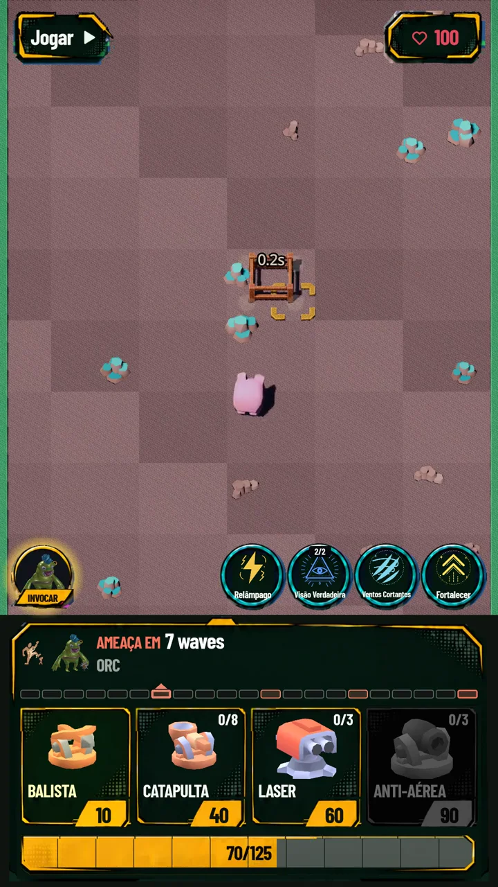
TorresCada torre muda o caminho.
Você escolhe o lugar. O Piggy corre, monta o andaime e coloca sua estratégia de pé. Desenhe um labirinto que faça cada disparo valer.
Já disponível para Android
Comande o Piggy, construa labirintos de torres e use suas habilidades para enfrentar hordas e conquistar chefões como aliados.
No navegador · os 3 primeiros mapas
Veja o jogo em ação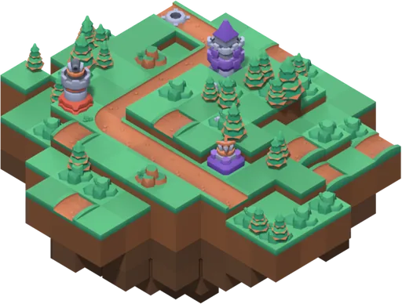
Pequeno herói. Grandes decisões.

TorresVocê escolhe o lugar. O Piggy corre, monta o andaime e coloca sua estratégia de pé. Desenhe um labirinto que faça cada disparo valer.
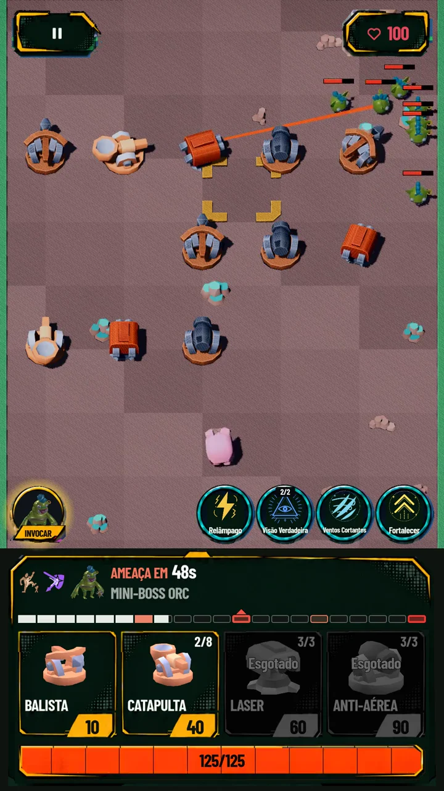
HabilidadesVoadores, inimigos furtivos e chefões que destroem suas torres. Leia a ameaça, combine suas defesas e solte a habilidade na hora certa.
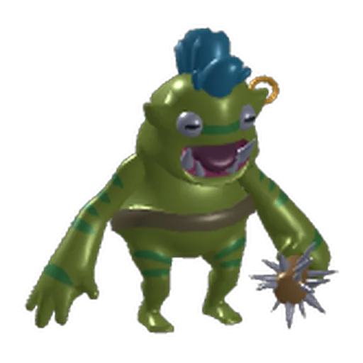
InvocaçõesDerrote um Boss no Classic para conquistar sua invocação. Leve-o à próxima batalha, use seu poder exclusivo e veja seu aliado crescer.
Prepare seu arsenal
Escolha o que levar. Descubra novas combinações. Volte mais forte.
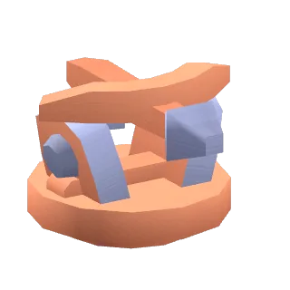
Balista01 / Torres
Balistas para pressionar, Catapultas para atingir grupos, Laser para concentrar dano. Combine funções, ajuste o posicionamento e melhore suas torres dentro e fora da partida.
O posicionamento faz parte da arma.
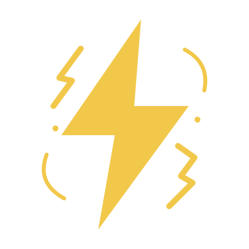
Relâmpago02 / Habilidades
Atinja grupos com Relâmpago, controle a passagem com Vinhas e fortaleça suas torres. Mire no campo de batalha: o Piggy leva a ação até o ponto escolhido.
Guarde o poder para o momento certo.
03 / Invocações
Os chefões que você derrotou podem lutar ao seu lado. Cada aliado tem uma habilidade própria e ganha experiência nas partidas, crescendo junto com suas conquistas.
Seu troféu de batalha entra em campo.
Uma campanha, muitos desafios
Da primeira floresta à Arena dos Gladiadores: novos cenários, inimigos e motivos para repensar sua defesa.
O primeiro labirinto. Orcs e goblins colocam sua defesa à prova entre as árvores.
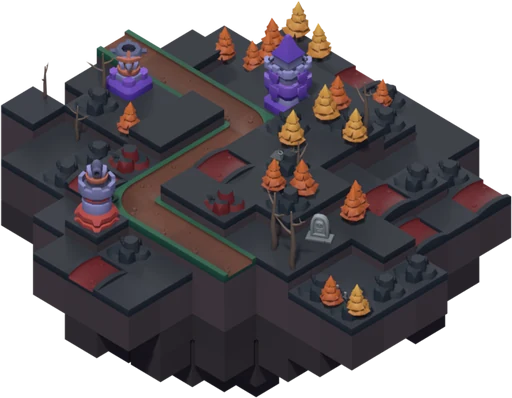
Lápides, mortos-vivos e ameaças espectrais. Prepare uma resposta para o que vem do além.
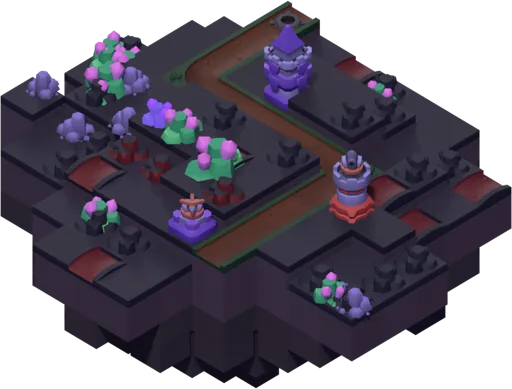
Cristais iluminam o subterrâneo. Os esqueletos não vão deixar você admirar a paisagem.
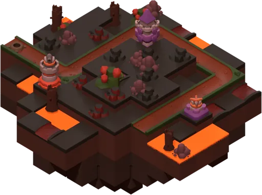
Torres diante da lava e criaturas infernais. Sua estratégia precisa aguentar a pressão.
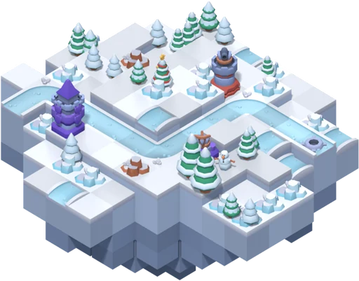
A campanha sobe aos picos gelados. Não deixe sua defesa esfriar.
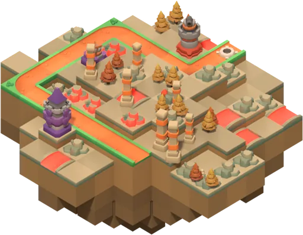
Um novo horizonte entre areia e ruínas. Mais uma razão para reorganizar seu arsenal.
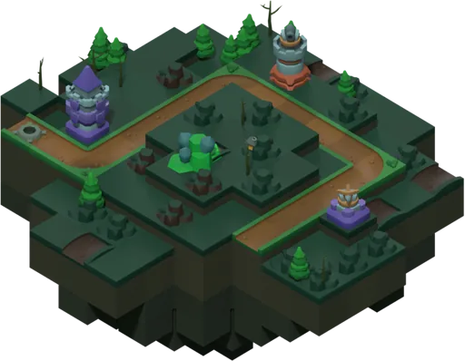
Terras verdes e criaturas inquietas. A próxima ameaça pede toda a sua atenção.
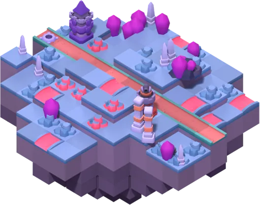
A magia toma o campo. Observe os avisos e mantenha o Piggy em movimento.
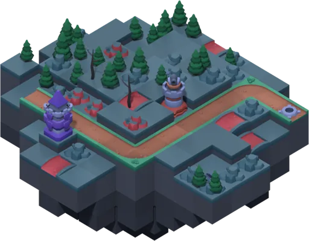
Muralhas antigas, uma nova batalha. Faça sua formação resistir até o fim.
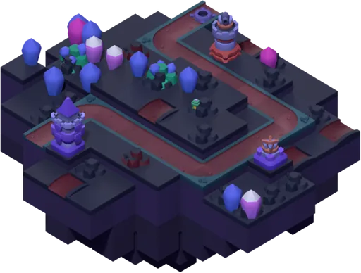
A jornada alcança outros céus. Combine tudo o que aprendeu para seguir em frente.
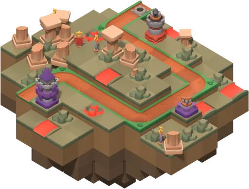
O desafio final da campanha Classic. Entre na arena com seu melhor plano.
Construa seu labirinto, proteja o portal e conquiste as três estrelas de cada mapa.
Depois de completar o Classic, enfrente uma sequência de campeões, minichefes e chefões.
Direto do campo de batalha
Gameplay real, decisões em movimento e um porquinho com muito trabalho pela frente.
41 segundos de estratégia, evolução e chefões. Trailer em português.
Música: “Five Armies” — Kevin MacLeod. Faixa editada para o trailer. incompetech.com · CC BY 4.0
Sua próxima defesa começa aqui
Experimente os três primeiros mapas no navegador ou encare a jornada completa no Android.
No navegador · os 3 primeiros mapas